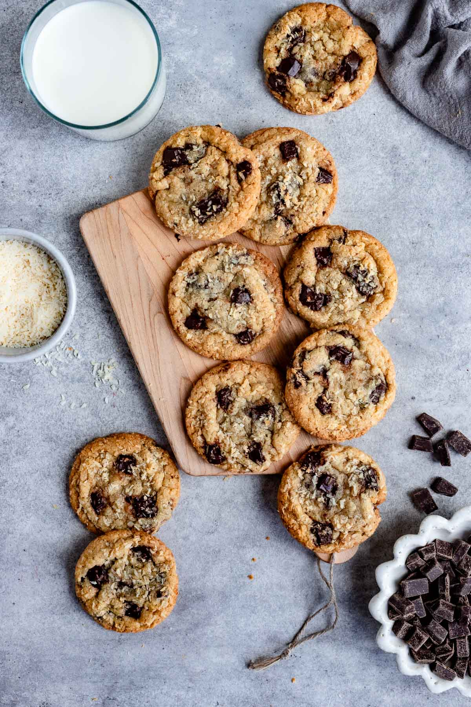

Chocolate Chip Cookies

Description
Chocolate chip cookies are a classic afternoon tea treat made from buttery dough studded with chunks of melted
chocolate.
Taste.com.au
Ingredients
- 150g butter, softened
- 1/2 cup brown sugar
- 1/2 cup caster sugar
- 1 egg
- 1 tsp vanilla extract
- 1 3/4 cups plain flour
- 1/2 cup milk chocolate bits, plus 1 tbsp extra
Method
- Preheat oven to 180C or 160C fan-forced. Line 2 baking trays with baking paper. Using an electric mixer or
whisking by hand, beat butter and sugars , and 1-2 minutes or until smooth and well combined. Beat in egg
and vanilla until combined.
- Stir in flour. Stir in dark and milk choc bits. Roll 2 level tablespoonfuls of mixture into balls and place
on prepared trays, 3cm apart. Press down slightly. Decorate with extra choc bits.
- Bake for 15-18 minutes or until light golden and cooked. Transfer to a wire rack to cool. Store in an
airtight container for up to 1 week.